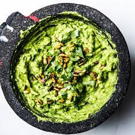

Heisenberg's Avocado Guac

Heisenberg's 99.1% pure guac... sorry it's not blue.
Ingrediants
- 2 ripe avocados, halved
- 1/4 red onion, finely diced
- 1/2 jalapeño, ribs and seeds removed, very finely diced
- 1 small tomato, finely chopped
- 1/4 cup fresh cilantro, chopped
- Juice of 1/2 lime
- Salt and pepper
Cooking Steps
- Smash the avocado using the backside of a fork, a potato masher, or witha mortar and pestile.
- Stir in the remaining ingredients.
- Adjust quaintities as desired.